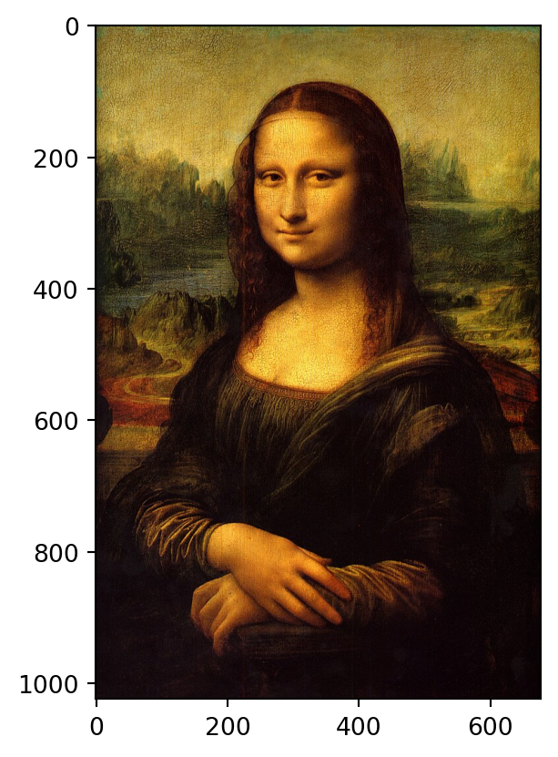
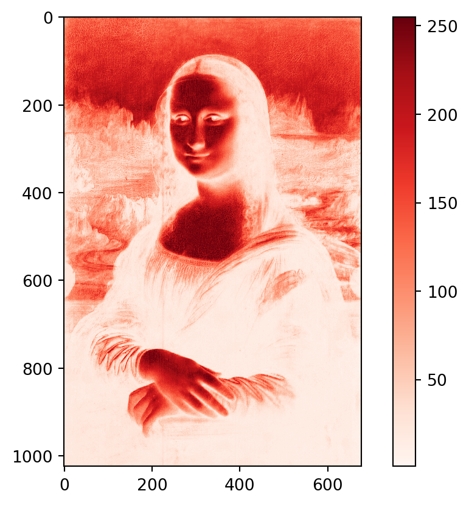
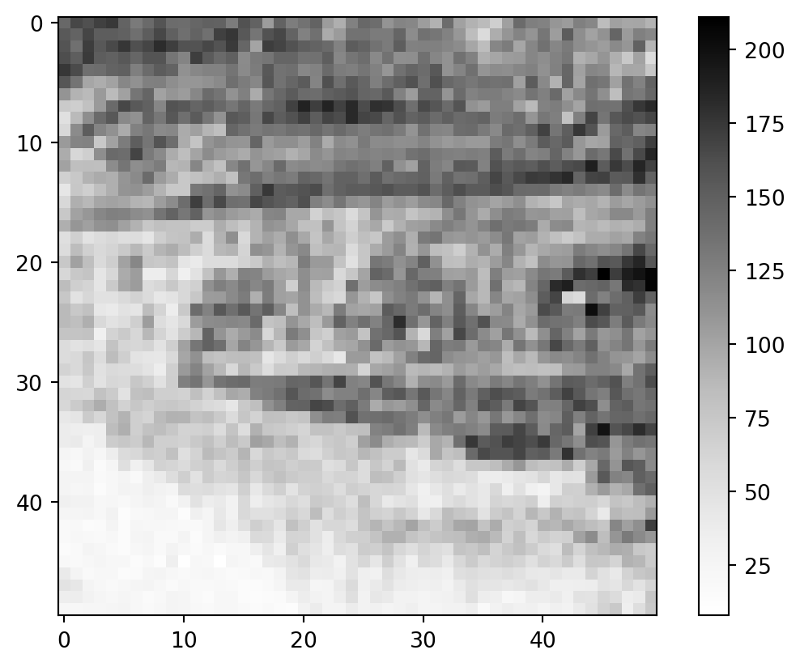
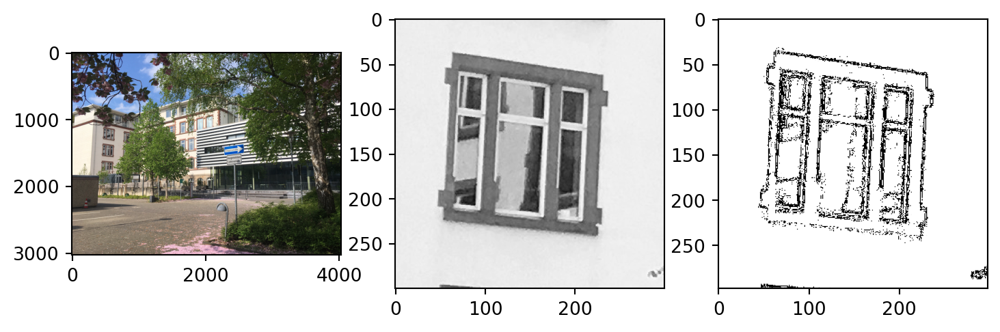
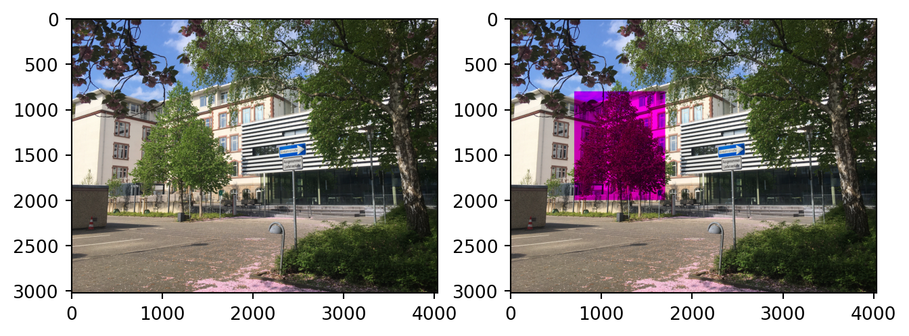

{kind=link}
import matplotlib.pyplot as plt
data = plt.imread("00-bilder/mona_lisa.jpg")
print("Shape:", data.shape)Shape: (1024, 677, 3)Images are digitally stored as matrices. Each pixel contains three color values: red, green, and blue. These three values (ranging from 0–255) are combined to produce all desired colors.
Thanks to the digital nature of images, they can be easily processed using NumPy tools. In the following example, we use the Mona Lisa as our image. It can be found at this link.
Let’s import this image using the imread() function from the matplotlib package. You’ll see that it is a three-dimensional NumPy array.
import matplotlib.pyplot as plt
data = plt.imread("00-bilder/mona_lisa.jpg")
print("Shape:", data.shape)Shape: (1024, 677, 3)Let’s take a look at a snippet of the data using the print() function.
print(data)[[[ 68 62 38]
[ 88 82 56]
[ 92 87 55]
...
[ 54 97 44]
[ 68 110 60]
[ 69 111 63]]
[[ 65 59 33]
[ 68 63 34]
[ 83 78 46]
...
[ 66 103 51]
[ 66 103 52]
[ 66 102 56]]
[[ 97 90 62]
[ 87 80 51]
[ 78 72 38]
...
[ 79 106 53]
[ 62 89 38]
[ 62 88 41]]
...
[[ 25 14 18]
[ 21 10 14]
[ 20 9 13]
...
[ 11 5 9]
[ 11 5 9]
[ 10 4 8]]
[[ 23 12 16]
[ 23 12 16]
[ 21 10 14]
...
[ 11 5 9]
[ 11 5 9]
[ 10 4 8]]
[[ 22 11 15]
[ 26 15 19]
[ 24 13 17]
...
[ 11 5 9]
[ 10 4 8]
[ 9 3 7]]]Using the plt.imshow function, the image can be displayed in true color. This works because the function interprets the last index of the dataset as color information (red, green, blue). If there were a fourth layer, it would be interpreted as an individual transparency value.
plt.imshow(data)
Of course, the individual color channels can also be viewed separately. We do this by fixing the last index. Here we look only at the red component of the image. When displaying a simple array, the output is in grayscale. With the option cmap='Reds', we can adjust the color scale.
# Use the red color scale 'Reds'
plt.imshow(data[:,:,0], cmap='Reds')
plt.colorbar()
plt.show()
Since the image data is stored as arrays, many operations such as slicing or other computations are possible. The example below shows a cropped area of the red channel.
region = np.array(data[450:500, 550:600, 0], dtype=float)
plt.imshow(region, cmap="Greys")
plt.colorbar()
Now let’s consider a more complex operation on image data, the Laplace operator. It can be used to detect the edges of objects. For each pixel \(B_{i,j}\) – except those at the border – the following value \(\phi_{i,j}\) is computed:
\[ \phi_{i, j} = \left|B_{i-1, j} + B_{i, j-1} - 4\cdot B_{i, j} + B_{i+1, j} + B_{i, j+1}\right| \]
The following function implements this operation. In addition, all values of \(\phi\) below a threshold are set to zero, and those above are set to 255.
def img_lap(data, threshold=25):
# Create a copy of the data as a float array
region = np.array(data, dtype=float)
# Split the equation into two parts
lapx = region[2:, :] - 2 * region[1:-1, :] + region[:-2, :]
lapy = region[:, 2:] - 2 * region[:, 1:-1] + region[:, :-2]
# Combine the parts and take the absolute value
lap = np.abs(lapx[:,1:-1] + lapy[1:-1, :])
# Thresholding
lap[lap > threshold] = 255
lap[lap < threshold] = 0
return lapNow let’s examine a photo of the Haspel Campus in Wuppertal: Image. Applying the Laplace operator to a cropped section gives the following result:
data = plt.imread('01-daten/campus_haspel.jpeg')
region = np.array(data[1320:1620, 400:700, 1], dtype=float)
lap = img_lap(region)
plt.figure(figsize=(9, 3))
ax = plt.subplot(1, 3, 1)
ax.imshow(data, cmap="Greys_r")
ax = plt.subplot(1, 3, 2)
ax.imshow(region, cmap="Greys_r");
ax = plt.subplot(1, 3, 3)
ax.imshow(lap, cmap="Greys");
We can now clearly see the outlines of the window.
If we want to edit a color component and then reassemble the image, we use the function np.dstack((red, green, blue)).astype('uint8'), where red, green, and blue are the individual 2D arrays. Let’s try removing the green color from the tree on the left.
It’s important that the data is in uint8 format after recombining, which is why we use .astype('uint8').
data = plt.imread('01-daten/campus_haspel.jpeg')
# Store individual color channels in arrays
red = np.array(data[:, :, 0], dtype=float)
green = np.array(data[:, :, 1], dtype=float)
blue = np.array(data[:, :, 2], dtype=float)
# Set the green area of the tree on the left to 0
green_new = green.copy()
green_new[800:2000, 700:1700] = 0
composed = np.dstack((red, green_new, blue)).astype('uint8')
plt.figure(figsize=(8, 5))
ax = plt.subplot(1, 2, 1)
ax.imshow(data, cmap="Greys_r")
ax = plt.subplot(1, 2, 2)
ax.imshow(composed)
Load the following image of the Haspel Campus in Wuppertal:
Image
Extract the blue component and display the middle row of the image, as well as any selected image section.
{kind=link}